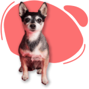

Olá! Veja os amigos disponíveis para a adoção!

Dunga
2 anos
Porte pequeno
Calmo e educado

Falar com responsável

Felícia
3 meses
Porte pequeno
Ativa e carinhosa
Falar com responsável

Sirius
6 meses
Porte grande
Ativo e educado
Falar com responsável

Fiona
3 anos
Porte pequeno
Calmo e carinhosa
Falar com responsável
Sid
8 meses
Porte médio/grande
Brincalhão e amável
Falar com responsável

Yoda
1 ano
Porte médio
Ativo e carinhoso
Falar com responsável

Lua
6 meses
Porte médio
Ativa e carinhosa
Falar com responsável

Amora
45 dias
Porte grande
Calma e carinhosa
Falar com responsável

Zelda
5 meses
Porte médio
Ativa e amável
Falar com responsável